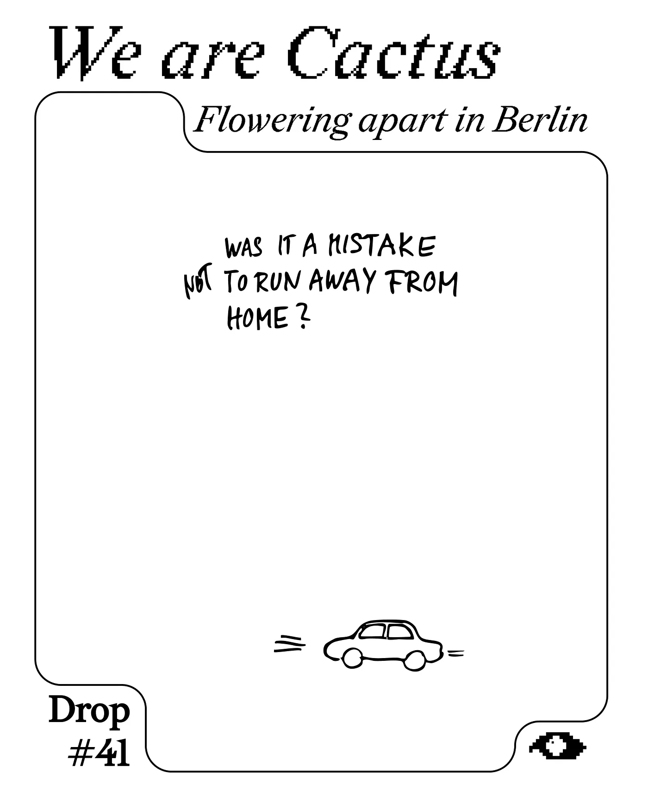
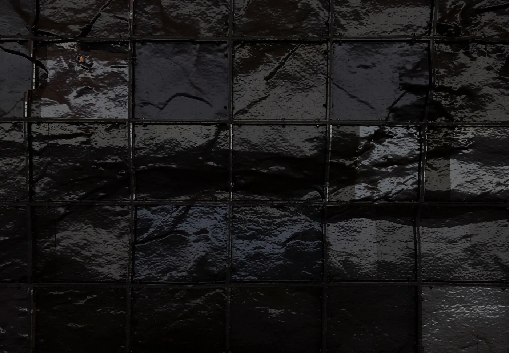
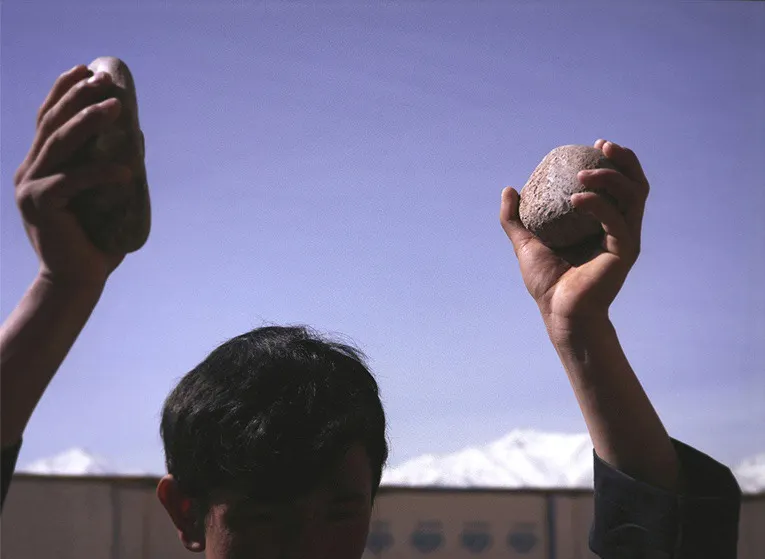

Drop #41 · December 5, 2025 · 7 min read
Flowering apart in Berlin
Hey everyone (▰˘◡˘▰)
Today we’re happy to host a text by Silvia Russo, with contributions by Laila Fakori. Silvia is a talented curator based in Berlin and her work has a special sensibility for the creation of spaces.

by Silvia Russo, with contributions by Laila Fakori
I was born in Messina on September 4th, 1997. My parents had waited a long time for my birth and hung a pink bow on the door of our seaside house. From that moment on, every 4th of September became for them a kind of ritual, even as life led us to celebrate it apart: they separated, and I was left fragmented.
In that same house lived a cactus which, just before my birthday, would bloom with marvellous pink flowers. Every year, that day always returns in the guise of an apparent celebration.
Laila was born in Ghazni, Afghanistan. As a Hazara, she spent much of her life marginalised and discriminated against in her own country, part of an ethnic group regarded as inferior. Her true date of birth is unknown to her. When she had to obtain identity documents as an adult, solely for bureaucratic reasons and to leave the country, she and her family chose an arbitrarily estimated date.
We should be about the same age.
I didn’t know any of this when we first met.
It happened at a birthday party in Pankow, between a cheesy ‘Happy Birthday’ song and a few beers on a little balcony, that still feels like a Berlin where one can belong.
Amidst the hustle and bustle, which felt distant to her, she shared with me her experience as a refugee in Germany.

Raised beneath the sky of Kabul and the Hazara mountains, she had been living in the German capital for three years: an imposed, survival-driven condition, having to find, piece together, and relate to herself anew. Who was she now, and who did she want to become? In a country that had once again fallen under Taliban control, she had not had the privilege to explore these questions. Laila described “her land” as a forgotten self, both with pride and shame at being born in a country in which she never truly recognised herself. Listening silently to her story of an existence caught between belonging and estrangement, I felt my own feelings reflected.
Is reflection already a way of inhabiting oneself?
Even when storms rage,until they pass,until the rain comes,and to accept that the rain helps me grow greener.I am Hazara.My people have faced genocide for years.It shaped my life like a scar that never healed.Now, the Taliban hold our land.I hugged a tree.I felt its calm.It said:“Be green. Be refuge.”I learned from the tree to stay greenso that others could take refuge in me.
By sharing her traumas with me, we found refuge in each other’s stories, uncovering our inner conflicts from a past that seems both distant and strangely familiar.
The most dysfunctional relationship we both have in our lives is with our birthplace: an extremely difficult bond of surveillance, shot through with rejection and shame, driven by the need to distance ourselves from the ideals, conformity, and oppressions typical of our places of origin, albeit in profoundly distinct ways due to geographical and political distance. Yet, at the same time, it has been a relationship of love and family, mixed with the guilt of having left: a connection that grows stronger the farther we are.
Our present selves later met again in my short-term Altbau Wohnung in Berlin, a place that felt a little like me and a little like yet another transitional moment, part of a process that never ceases to occur in our lives. A home that does not consolidate but fragments, preserving only remnants of relationships and constant adaptations. A home that exists as an absence, as the Italian theorist Gianluca Didino writes in Essere Senza Casa (Minimum Fax, 2020): a void that does not fill, transforming the very idea of arrival into lack.
That day, Laila arrived with a gift: a small cactus. In Afghan tradition, she explained, gifting a cactus is a wish for a lasting relationship, as the plant, due to its ability to withstand extreme conditions, symbolises solid and resilient bonds.

For lunch, we shared a traditional Sicilian meal and an Afghan dessert. In that intimacy, Laila confessed to me how, when she arrived in Germany, she never found a place where she could truly feel herself. She missed the mountains, felt disconnected, and carried with her the memories of her Afghan village: the sounds, the hardships, the rustle of trees in the wind, and the ceaseless bleating of sheep. She carried the absence of her family, now trapped in Pakistan, unable to enter Europe legally.
As she opened up more to me, reflecting on my lifelong controlling relationship, I realised that, for me, it did not take the form of an entire country, as it did for Laila, but was embodied mainly in a close family tie. A constant presence of vigilance and violence, for as long as I can remember. It forced me to develop survival mechanisms: patterns of lying and hiding, learned out of fear of being discovered. Trying to keep me anchored to my place of origin, with its ideals and traditions, a prewritten fate was imposed on me: ‘stay here, do not work, marry young’. Obedience to an old traditionalist model was required, which, in the end, only made me run away.
I, too, missed many things when I moved to Berlin: the daily presence of my sisters and my mother, the vivid colours of my city, once taken for granted, which I carry within me as an absence.
What sort of bond is it with a place that remains nostalgic, yet never belonging?
The friendship between Laila and me bears a resemblance to the formation of a new family, marked by a shared sense of belonging.
In her writings on love and home, and throughout her lifelong journey, bell hooks insists on the need to build ties based on an ethic of mutual desire and shared refuge, rather than ownership or control. For the author, home can become a refuge only if detached from the logic of property and reconfigured as relational practice. Laila’s cactus embodies this: a system of kinship that slips outside official registers, arising from the desire to remain human together.
To conclude with my friend Laila’s words:
Today, I stood at the window for a long while. Later, I went for a walk, observing the grass, the trees,and the tiny drops of dew resting delicately on the fragile flowers and leaves.I went into a shop later and drifted into the flower section,here I noticed some beautiful cacti placed on the top shelf.I picked one up, held it in my hands, and felt a quiet fondness for it.
Yet I hesitated—should I take it home or leave it behind?I remembered how one of my three cacti had died, and the sadness still lingers.I thought:What if I fail again to care for this one?So, I put it back.At times, I feel the same about relationships:I hold back, afraid I might not be able to nurture them as they deserve.On my way home, I thought of you, my dear Silvia, and of the cactus.I recalled your questions about them, and how you once told me that at your parents’ seaside house, there were cacti which, every year, just some days before your birthday, would blossom with pink flowers—and how, when you gradually began to drift away from Messina, those flowers stopped appearing.After lunch, I found myself once more at the window,watching the rain, and again your question returned to me.To me, a cactus is like our girls:resilient and patient, weary yet still fighting, beautiful but edged with thorns.It is a plant that survives in any circumstance.At times, I see myself in the cactus—though I may have thorns,I, too, can grow and endure, no matter the environment.I even feel that cacti are sensitive, almost emotional.When mine withered,it was as if it had absorbed my sadness and could no longer remain with me.Giving someone a cactus is a way of wishing for a friendship that will endure,a bond able to withstand hardship, distance, and time, yet remain steadfast and true.This is the way of the cactus:it clings to friendship and loyalty, even when we ourselves are no longer present.Shouldn’t human relationships be the same?I will never forget the first time we met.